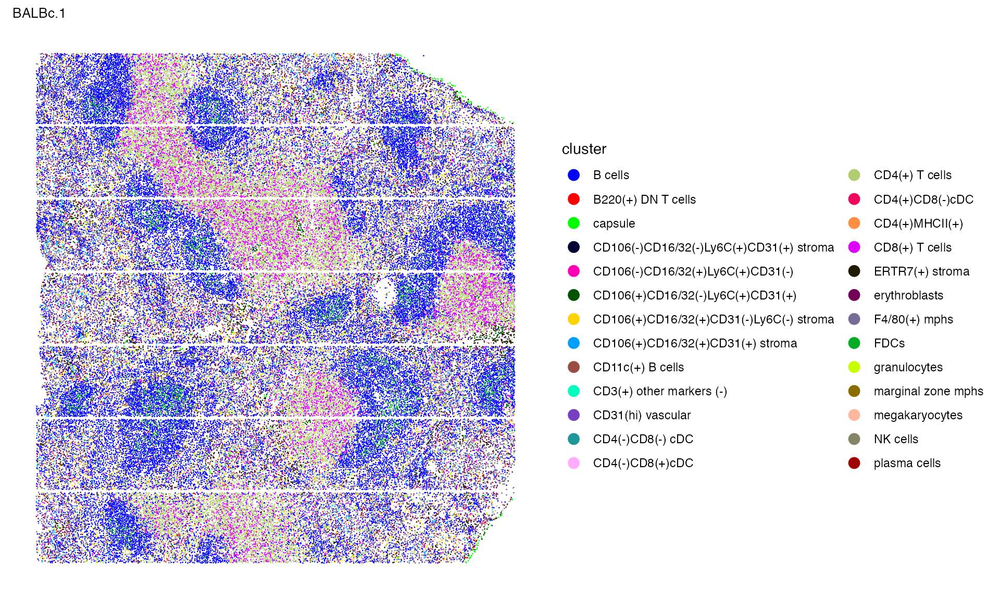

Analysis across Multiple Images
Xiyu Peng
2025-04-17
Source:vignettes/articles/spleen_analysis.Rmd
spleen_analysis.RmdIn this tutorial, we will show how to apply SpaTopic to jointly identify topics across multiple images.
Set-up
We will work on 9 spleen tissue images and illustrate how to apply SpaTopic to multiple images to jointly identify topics. The dataset object can be downloaded from here, with original source from a Cell paper. This dataset includes nine images: three control normal BALBc spleens (BALBc 1-3) and six MRL/lpr spleens (samples 4-9) at varying disease stages—early (MRL 4-6), intermediate (MRL 7-8), and late (MRL 9) (Figure 5A). Using a 30-plex protein marker panel, the study identified 27 major splenic-resident cell types across the nine tissue images. We use the cell type annotation in the original paper.
x<-readRDS(file = "~/Documents/Research/github/SpaTopic_benchmarking/data/mouse_spleen_data/spleen_df.rds")
names(x)
#> [1] "BALBc-1" "BALBc-2" "BALBc-3" "MRL-4" "MRL-5" "MRL-6" "MRL-7"
#> [8] "MRL-8" "MRL-9"We firstly prepare this dataset as the required input for SpaTopic. For multiple images, SpaTopic requires a list of data frames as input, each with columns
- image
- X
- Y
- type
You may add additional axis Y2 for 3D image.
select_column<-function(data){
data_select<-as.data.frame(cbind(data$sample, data$sample.X, data$sample.Y, data$sample.Z, data$cluster))
colnames(data_select)<-c("image","X","Y","Y2","type") # we also save the coordinate on Z axis
data_select$image<-gsub("-", ".", data_select$image)
data_select
}
dataset<-lapply(x,select_column)
names(dataset) ## names of the 9 images
#> [1] "BALBc-1" "BALBc-2" "BALBc-3" "MRL-4" "MRL-5" "MRL-6" "MRL-7"
#> [8] "MRL-8" "MRL-9"
head(dataset[["BALBc-1"]]) ## df for the first image
#> image X Y Y2 type
#> 1 BALBc.1 2392 5646 28.7234042553191 CD11c(+) B cells
#> 2 BALBc.1 3783 5471 33.5106382978723 CD11c(+) B cells
#> 3 BALBc.1 3790 9311 9.57446808510638 CD11c(+) B cells
#> 4 BALBc.1 2406 4963 19.1489361702128 CD11c(+) B cells
#> 5 BALBc.1 5182 2014 33.5106382978723 CD11c(+) B cells
#> 6 BALBc.1 5183 9421 28.7234042553191 CD11c(+) B cellsRun SpaTopic
Once we have prepared data, we can start to run SpaTopic with number
of topic = 6. The initialization may takes time, and you may run the
algorithm in parallel do.parallel = TRUE with multiple
cores n.cores = 8.
library(SpaTopic)
library(sf)
## NOT RUN, TAKES ABOUT 10~15 MIN across 9 images with single core.
system.time(gibbs.res<-SpaTopic_inference(dataset, ntopics = 6, sigma = 20, region_radius = 150, burnin = 1500))
save(gibbs.res,file = "~/Documents/Research/github/SpaTopic_benchmarking/data/mouse_spleen_data/gibbs.res.v2.rdata")
load(file = "~/Documents/Research/github/SpaTopic_benchmarking/data/mouse_spleen_data/gibbs.res.v2.rdata")Visualize the result
We will still use Seurat Package to help for visualization. First, let’s create a list of Seurat Object.
spleen_objects<-list()
library(Seurat)
for(i in names(x)){
counts<-as.matrix(x[[i]][,c(2:30,34)])
subset<-CreateSeuratObject(counts = t(counts), assay = "protein")
subset$X<-x[[i]]$sample.X
subset$Y<-x[[i]]$sample.Y
subset$cluster<-x[[i]]$cluster
subset$sample<-x[[i]]$sample
coords <- CreateFOV(
data.frame(X = subset$X,Y = subset$Y),
type = c("centroids"),assay = "protein"
)
i<-gsub("-", ".", i) # seurat package does not like -
subset[[i]] <- coords
spleen_objects[[i]]<-subset
}We first plot the spatial distribution of 27 cell types across 9 images.
library(ggplot2)
library(patchwork)
p_celltype<-NULL
for (i in names(spleen_objects)){
object<-spleen_objects[[i]]
object$cluster<-as.factor(object$cluster)
p_celltype[[i]]<-ImageDimPlot(object, fov = i, group.by = "cluster", axes = FALSE, dark.background = F,cols = "glasbey") + ggtitle(i) +
theme(legend.position = "right",
plot.title = element_text(size = 10),
plot.margin = margin(0, 0, 0, 0, "null") # Reduce margins (top, right, bottom, left)
)
}
wrap_plots(p_celltype,nrow = 3,guides = "collect") & NoLegend()
You may take a closer look on the first image
p_celltype[[1]]
Then we add SpaTopic to the Seurat objects for visualization
itr_df<-do.call(rbind, dataset)
itr_df$image<-as.factor(itr_df$image)
itr_df$topic<-as.factor(gibbs.res$cell_topics)
## update result in seurat object
for(i in names(spleen_objects)){
object<-spleen_objects[[i]]
name2<-gsub("\\.", "-", i)
object$Topic<-itr_df$topic[itr_df$image == i]
spleen_objects[[i]]<-object
}We also plot the spatial distribution of the main six topics.
palatte<- c("#0000FFFF","#FF0000FF","#00FF00FF","#009FFFFF","#FF00B6FF","#005300FF","#FFD300FF")
names(palatte)<-as.character(1:7)
p_spatopic<-NULL
for (i in names(spleen_objects)){
object<-spleen_objects[[i]]
object$Topic<-as.factor(object$Topic)
p_spatopic[[i]]<-ImageDimPlot(object, fov = i, group.by = "Topic", axes = FALSE, dark.background = F,cols = palatte) + ggtitle(i) +
theme(legend.position = "right",
plot.title = element_text(size = 10),
plot.margin = margin(0, 0, 0, 0, "null") # Reduce margins (top, right, bottom, left)
)
}
wrap_plots(p_spatopic,nrow = 3,guides = "collect") & NoLegend()